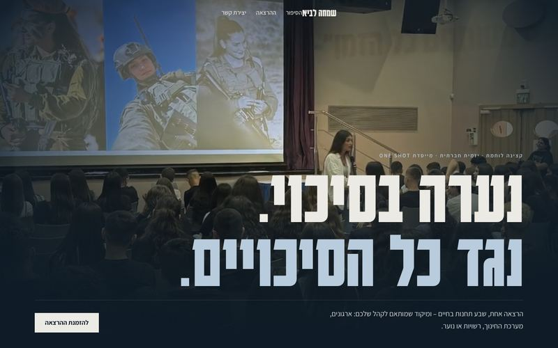
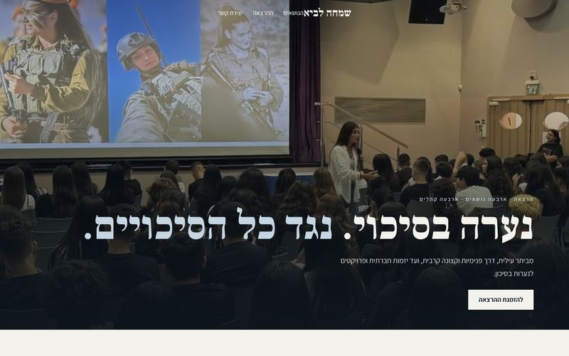
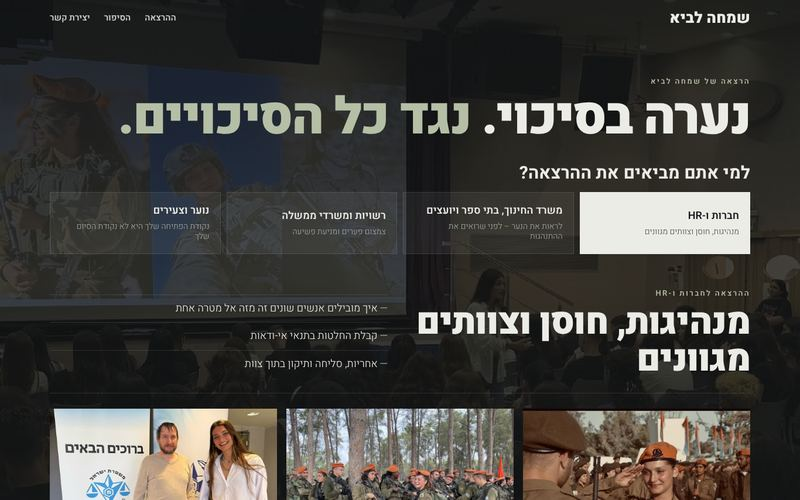
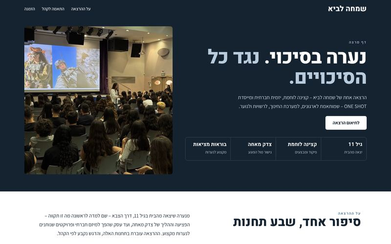
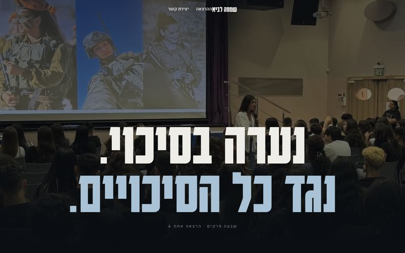

בכל הכיוונים יש הרצאה אחת – ״נערה בסיכוי. נגד כל הסיכויים.״ – שמותאמת לארבעה קהלים: חברות ו-HR, משרד החינוך ובתי ספר, רשויות ומשרדי ממשלה, ונוער. ההבדל הוא איך כותבים ומסדרים את המידע.

הסיפור קודם: שבע תחנות לפי הסדר – ביתר עילית, נערה בסיכוי, הגיוס, קצונה, הפציעה, ONE SHOT, בוראות מציאות. ליד כל תחנה מסומן הנושא שלה.
ההרצאה: ״הרצאה אחת, ארבעה מיקודים״ – כפתור לכל קהל, ובו המיקוד, מאילו תחנות הוא בנוי ומה הקהל לוקח.
לצפייה ←
פסקת סיפור קצרה, ואז ארבעת הנושאים – אחדות, צמצום פערים ונוער בסיכון, מנהיגות, וצדק מאחה – ומתחת לכל נושא: ״מתוך הסיפור״ ו״מתאים במיוחד ל...״.
ההרצאה: ״לא צריך לבחור בין הרצאות״ – ארבעה קהלים בשורה, לכל אחד הדגש שלו.
לצפייה ←
מתחיל מהמבקר: מיד בפתיחה – ״למי אתם מביאים את ההרצאה?״ וארבעה כפתורים גדולים. לחיצה מציגה את הגרסה של ההרצאה לאותו קהל, עם שלוש תחנות מודגשות ותמונות.
הכי ממוקד-לקוח: מנהלת HR רואה רק את מה שרלוונטי לה. הסיפור המלא – כשורה קצרה למטה.
לצפייה ←
כמו דף מקצועי למקבלי החלטות: מה ההרצאה, שבע התחנות בה, וטבלה שמראה איזו תחנה מודגשת לאיזה קהל, ואחריה שלוש תובנות לכל קהל.
הכי ״רשמי״ ושקוף – מתאים למשרדי ממשלה ולמחלקות HR שמשווים בין מרצים.
לצפייה ←
קולנועי: כל תחנה בחיים היא מסך שלם עם משפט אחד חזק – ״בגיל 11 יצאתי מהבית.״, ״בצבא למדתי לראשונה מה זו תקווה.״, ״בחרתי לסלוח.״
ההרצאה בסוף: ״שבעה פרקים. הרצאה אחת.״ – בוחרים קהל ורואים איפה עוצרים.
לצפייה ←הטקסטים הם טיוטה קצרה שבנויה מהמידע ששלחתם – כדי שתוכלו לדייק אותם. אפשר לשלב: למשל המבנה של כיוון 3 עם העיצוב של כיוון 5.